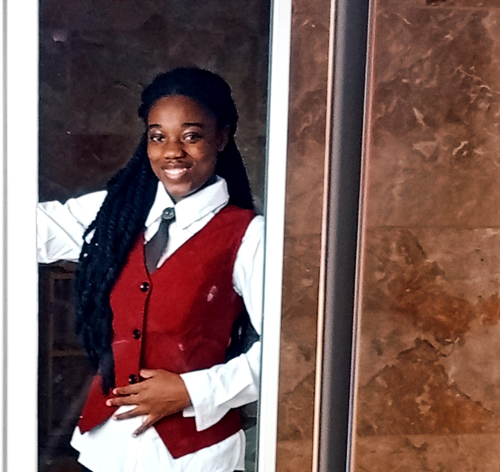

Passionnée par l’enseignement et désireuse d’apporter une touche particulière à la pédagogie à travers le digital, j'aime bien qualifier mon parcours de « Péda-Tech ». Je suis Christina Tossou, diplômée en germanistique (études de la langue et de la culture germanophone). J’ai travaillé au sein du Goethe-Institut dans le domaine de la documentation, et j'ai aussi exercé en tant que professeure d’allemand en freelance. Suite au constat des préjugés portés sur la langue et dans l’optique d’offrir à tous un environnement d’apprentissage ludique et stimulant, j'ai créé une chaîne YouTube dédiée à l'apprentissage de la langue allemande afin d’apporter ma part d’innovation dans l’enseignement et l’apprentissage des langues étrangères.
En outre, mes engagements communautaires et para-académiques, notamment au sein du club d’allemand de l’Université FHB de Cocody et dans ma communauté religieuse, ont constitué l’une des bases solides de mes soft skills et hard skills.Aujourd’hui, je suis assistante de langue française en Allemagne et, en tant qu’ambassadrice de cette langue et de ma culture, je prends plaisir à partager mon savoir avec un nouveau groupe de personnes tout en apprenant d'elles. Des objectifs, j'en ai tellement, mais celui qui me tient le plus à cœur est de pouvoir allier technologie, éducation et culture, trois domaines parmi les plus importants de notre société. Développeuse web en devenir, je crois au potentiel de la jeunesse africaine et je suis bien convaincue de l'importance pour nous, en tant que jeunes, de s'intéresser davantage au numérique. Tu as une idée, un projet de création de site ? Permets-moi de les concrétiser !
